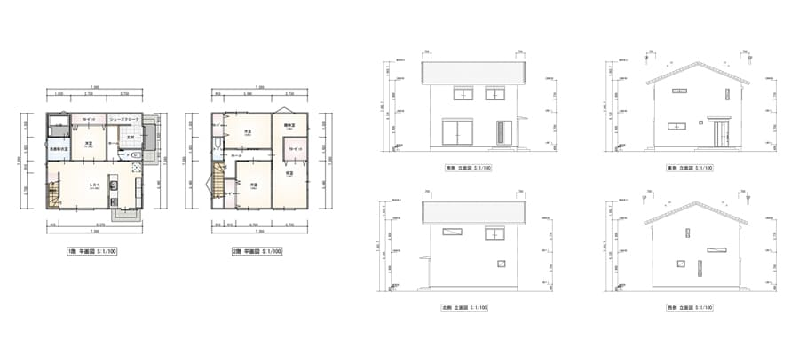

家づくりのお手伝いサービス
家づくりを進めていくには、プランや希望をアウトプットする事が大切です。 間取り、外観、イメージ、資金などのプランを具体的にするのがこのサービスです。 お客様が思い描いているお望みの“家”を実際に建てるなら、どのような間取り(平面プラン)になるか？どのような外観(立面プラン)になるか？どのようなイメージ(CGパース)になるか？ そして、おおよその建築費用は？を具体化します。
■注意事項
1.このサービスで作成されたプラン図面は建築基準法とうの関係法令には適合していないため、実際に建築可能になるプラン図面でありません。
2.このサービスで提示した建築費用は一般的なものであり、実際にこの金額で建築できるわけではありません。
■価格の目安
1.お手伝いコース
間取り(平面プラン1P）+外観（立面プラン1P）+イメージ（CGパース1P）+建築費用（概算見積り表紙と大分類）を納品する、一般の方向けの内容になっています。
・木造2階建て、延床面積133㎡まで ￥55,000（税込）
※133㎡以上や特殊なプランはお見積りします。
2.営業支援コース
お手伝いコース+断面図+図面データ（DXF,JW）渡し+建築費用（概算見積り）の詳細+パース1P追加となります。
・木造2階建て、延床面積133㎡まで ￥110,000～（税込）
※133㎡以上や特殊なプランはお見積りします。
3.オプション
・模型作り。3Dプリンターにて1/100の模型を作成します。
お見積りします。
■利用するメリット
1.間取り(平面プラン）
ラフに描かれた間取りを図面化することで、正確な大きさや形が確認できる。
（各部屋が何帖あるのか、廊下や階段の位置、動線など）
2.外観（立面プラン）
整えられた間取りとリンクした立面図で、外観を確認できる。
（建物の高さ、屋根の形、窓の大きさや位置など）
3.イメージ（CGパース）
外観のCGパースで、完成イメージが確認できる。
４.建築費用（概算見積り）
市販されている積算資料（金額がわかる本）に準じた金額で一般的な仕様内容にて
見積りしますので、作成されたプランの一般的な建築費用が確認できる。
■利用手順
1.基本的にはメールやSNSのメッセージ機能でおこなうので打合せなどの時間は必要ありません。
2.お客様は手書でも、パソコンでも結構なのでプランのラフな下書きを当社に送って下さい。
3.お客様の下書きをもとに図面化して送信します。

4.この平面図、立面図の時点でお客様に図面を送信しますので、送信より10日以内に変更箇所を赤ペンにて
記入して頂ければ、図面を変更します。
※変更は1度限りとさせて頂きます
5.成果品の、平面図、立面図、イメージパース、概算見積りをPDFデータにて送信致します。 完了となります。
ここまでが、お手伝いコースです。
6.営業支援コースは
お手伝いコース+断面図+図面データ（DXF,JW）渡し+建築費用（概算見積り）の詳細+パース1P追加となります。
7.オプション
模型作り。3Dプリンターにて1/100の模型を作成します。

■活用方法
1.PDFデータで納品しますので、何枚でも出力できます。
2.間取り(平面プラン）
図面に様々な情報を書きくわえることでライフスタイルの確認ができます。
例えば：家具、家電、照明やコンセントの位置や生活動線の確認して部屋の数や大きさを検討して、
増やす？減らす？など再検討出来ます。
3.外観(立面プラン)
窓の大きさ、位置の再検討できます。
塗り絵にして外壁の色を検討できます。
4.実行する時に役立ちます。
お客様は、設計や工事を依頼する会社を見つけるために
ハウスメーカー、大工さん、設計事務所、工務店、営業マン、などと直接 お話しをしなければなりません。
相手はプロです。お客様に質問します。
ご希望は？、ご予算は？、いつ頃建てる予定ですか？、建設用地はありますか？
などなど。 （当然ですよね。いくらプロでもお客様のご要望を聞かなければ何もできません。）
その時に、お客様には「お客様だけのプラン」が準備が出来ています。
迷うことなくブレることなく、あなたは答える事ができるはずです。
逆にお客様が抱える疑問や不安なことを相手に質問できるはずです。
それだけで、多くの時間の節約につながります。